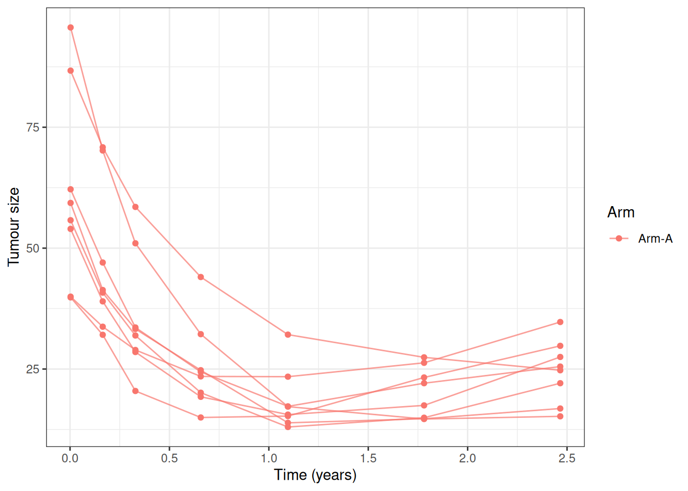
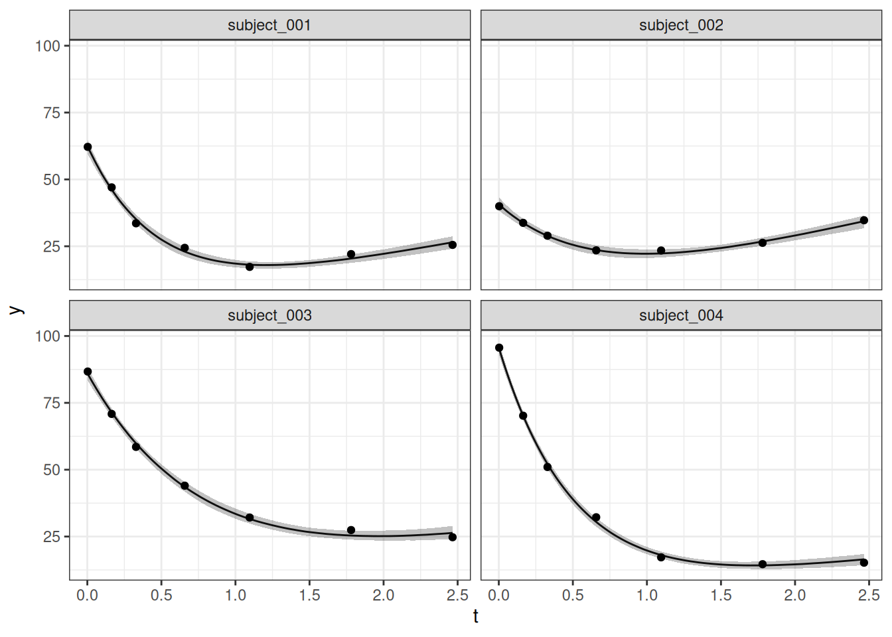
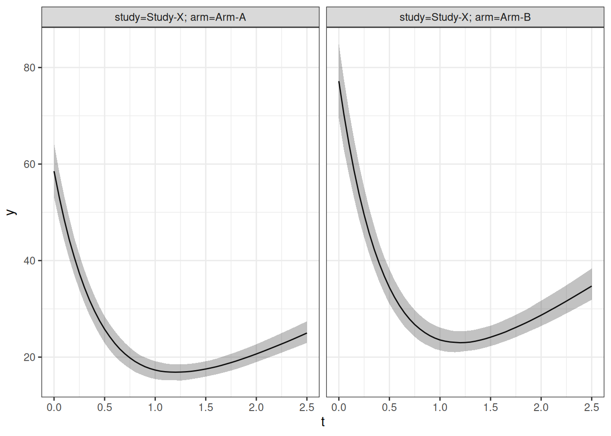

library(jmpost)
#> Registered S3 methods overwritten by 'ggpp':
#> method from
#> heightDetails.titleGrob ggplot2
#> widthDetails.titleGrob ggplot2
#> CmdStan path set to: /root/.cmdstan/cmdstan-2.40.0
library(ggplot2)
library(dplyr)
#>
#> Attaching package: 'dplyr'
#> The following objects are masked from 'package:stats':
#>
#> filter, lag
#> The following objects are masked from 'package:base':
#>
#> intersect, setdiff, setequal, unionIntroduction
This vignette gives a complete implementation of a custom longitudinal model whose population parameters depend on subject-level covariates. It extends the Wang, Sung et al. (2009) mixed exponential-decay and linear-growth example from the custom longitudinal model vignette. The general extension interfaces are described in Extending jmpost.
We use the longitudinal model
Here, and are independently specified design-matrix rows. Consequently, the baseline and growth distributions can use different covariates. The intercepts and coefficients are on the log scale, so the population medians of and are positive.
The survival submodel and derivative link are the same as in the example without longitudinal covariates:
The example deliberately implements the covariate handling itself. For a real application, you would of course first check whether one of jmpost’s built-in covariate models already describes the required trajectory.
Generating Simulated Data
We begin with a simulator so that the fitted arm effects have known target values. Arm B has a 25% higher median baseline and a 40% higher median growth rate than Arm A.
SimWangCov <- setClass(
"SimWangCov",
contains = "SimLongitudinal",
slots = c(
times = "numeric",
mu_baseline = "numeric",
baseline_arm_ratio = "numeric",
mu_shrinkage = "numeric",
mu_growth = "numeric",
growth_arm_ratio = "numeric",
omega_baseline = "numeric",
omega_shrinkage = "numeric",
omega_growth = "numeric",
sigma = "numeric",
link_dsld = "numeric"
)
)
sampleSubjects.SimWangCov <- function(object, subjects_df) {
arm_b <- as.numeric(subjects_df$arm == "Arm-B")
n_subjects <- nrow(subjects_df)
subjects_df$baseline <- rlnorm(
n_subjects,
log(object@mu_baseline) + log(object@baseline_arm_ratio) * arm_b,
object@omega_baseline
)
subjects_df$shrinkage <- rlnorm(
n_subjects,
log(object@mu_shrinkage),
object@omega_shrinkage
)
subjects_df$growth <- rlnorm(
n_subjects,
log(object@mu_growth) + log(object@growth_arm_ratio) * arm_b,
object@omega_growth
)
subjects_df
}
sampleObservations.SimWangCov <- function(object, times_df) {
expected <- with(
times_df,
baseline * exp(-shrinkage * time) + growth * time
)
derivative <- with(
times_df,
growth - baseline * shrinkage * exp(-shrinkage * time)
)
times_df$sld <- rnorm(nrow(times_df), expected, object@sigma)
times_df$log_haz_link <- object@link_dsld * derivative
times_df
}
set.seed(7294)
simulated <- SimJointData(
design = list(
SimGroup(25, "Arm-A", "Study-X"),
SimGroup(25, "Arm-B", "Study-X")
),
survival = SimSurvivalExponential(
lambda = 365 / 500,
time_max = 3,
time_step = 1 / 365,
lambda_censor = 1 / 30
),
longitudinal = SimWangCov(
times = c(1, 60, 120, 240, 400, 650, 900) / 365,
mu_baseline = 60,
baseline_arm_ratio = 1.25,
mu_shrinkage = 2,
mu_growth = 10,
growth_arm_ratio = 1.4,
omega_baseline = 0.25,
omega_shrinkage = 0.25,
omega_growth = 0.25,
sigma = 1.5,
link_dsld = 0.02
),
.silent = TRUE
)
dat_lm <- simulated@longitudinal
dat_os <- simulated@survival
dat_lm |>
filter(subject %in% head(unique(subject), 8)) |>
ggplot(aes(time, sld, group = subject, colour = arm)) +
geom_line(alpha = 0.7) +
geom_point() +
labs(x = "Time (years)", y = "Tumour size", colour = "Arm") +
theme_bw()
Defining the Covariate-Aware Model
A custom covariate model needs to retain its formulas so that the same design can be reconstructed for fitting and prediction. We therefore add two formula slots to the LongitudinalModel subclass.
.WangCovModel <- setClass(
"WangCovModel",
contains = "LongitudinalModel",
slots = c(
baseline_formula = "formula",
growth_formula = "formula"
)
)
WangCovModel <- function(baseline_formula = ~arm,
growth_formula = ~arm) {
stopifnot(
inherits(baseline_formula, "formula"),
length(baseline_formula) == 2,
inherits(growth_formula, "formula"),
length(growth_formula) == 2
)
.WangCovModel(
LongitudinalModel(
name = "Wang with Covariates",
stan = StanModule("custom-cov-model.stan"),
scaled_variance = FALSE,
parameters = ParameterList(
Parameter(
name = "log_mu_baseline",
prior = prior_normal(log(60), 0.5)
),
Parameter(
name = "beta_baseline",
prior = prior_normal(0, 0.5),
size = "p_baseline_cov"
),
Parameter(
name = "mu_shrinkage",
prior = set_limits(
prior_lognormal(log(2), 0.5),
lower = getOption("jmpost.double_eps")
)
),
Parameter(
name = "log_mu_growth",
prior = prior_normal(log(10), 0.5)
),
Parameter(
name = "beta_growth",
prior = prior_normal(0, 0.5),
size = "p_growth_cov"
),
Parameter(
name = "sigma_baseline",
prior = set_limits(
prior_lognormal(log(0.25), 0.5),
lower = getOption("jmpost.double_eps")
)
),
Parameter(
name = "sigma_shrinkage",
prior = set_limits(
prior_lognormal(log(0.25), 0.5),
lower = getOption("jmpost.double_eps")
)
),
Parameter(
name = "sigma_growth",
prior = set_limits(
prior_lognormal(log(0.25), 0.5),
lower = getOption("jmpost.double_eps")
)
),
Parameter(
name = "sigma",
prior = set_limits(
prior_lognormal(log(1.5), 0.5),
lower = getOption("jmpost.double_eps")
)
),
Parameter(
name = "baseline_idv",
prior = set_limits(
prior_init_only(prior_lognormal(log(60), 0.5)),
lower = getOption("jmpost.double_eps")
),
size = "n_subjects"
),
Parameter(
name = "shrinkage_idv",
prior = set_limits(
prior_init_only(prior_lognormal(log(2), 0.5)),
lower = getOption("jmpost.double_eps")
),
size = "n_subjects"
),
Parameter(
name = "growth_idv",
prior = set_limits(
prior_init_only(prior_lognormal(log(10), 0.5)),
lower = getOption("jmpost.double_eps")
),
size = "n_subjects"
)
)
),
baseline_formula = baseline_formula,
growth_formula = growth_formula
)
}
longmodel <- WangCovModel(
baseline_formula = ~arm,
growth_formula = ~arm
)The corresponding Stan program declares the two model-specific design matrices. It uses them to form subject-specific log-normal locations and also populates long_obvs_log_lik, which keeps the standard likelihood and loo processing available.
functions {
vector sld(vector time, vector baseline, vector shrinkage, vector growth) {
return baseline .* exp(-shrinkage .* time) + growth .* time;
}
}
data {
int<lower=0> p_baseline_cov;
matrix[n_subjects, p_baseline_cov] baseline_cov_design;
int<lower=0> p_growth_cov;
matrix[n_subjects, p_growth_cov] growth_cov_design;
}
transformed parameters {
vector[n_subjects] baseline_location =
rep_vector(log_mu_baseline, n_subjects) +
baseline_cov_design * beta_baseline;
vector[n_subjects] growth_location =
rep_vector(log_mu_growth, n_subjects) +
growth_cov_design * beta_growth;
vector[n_tumour_all] Ypred = sld(
tumour_time,
baseline_idv[subject_tumour_index],
shrinkage_idv[subject_tumour_index],
growth_idv[subject_tumour_index]
);
long_obvs_log_lik[subject_tumour_index_obs] = vect_normal_log_dens(
tumour_value[subject_tumour_index_obs],
Ypred[subject_tumour_index_obs],
rep_vector(sigma, n_tumour_obs)
);
if (n_tumour_cens > 0) {
long_obvs_log_lik[subject_tumour_index_cens] = vect_normal_log_cum(
tumour_value_lloq,
Ypred[subject_tumour_index_cens],
rep_vector(sigma, n_tumour_cens)
);
}
}
model {
baseline_idv ~ lognormal(baseline_location, sigma_baseline);
shrinkage_idv ~ lognormal(log(mu_shrinkage), sigma_shrinkage);
growth_idv ~ lognormal(growth_location, sigma_growth);
}Supplying Model-Specific Stan Data
DataLongitudinal() deliberately continues to use an outcome ~ time formula. Longitudinal covariates are subject-level variables and belong in the data passed to DataSubject(). A longitudinal_model_stan_data.<class>() method turns those variables into the model-specific Stan data.
The helper below removes the usual intercept column because the Stan model has explicit intercept parameters. Its reference argument preserves the fitted factor levels, contrasts, and column order when the same formula is applied to new population profiles.
covariate_design <- function(formula, data, reference = data) {
reference_frame <- model.frame(
formula,
data = reference,
na.action = na.fail
)
formula_terms <- terms(reference_frame)
reference_design <- model.matrix(formula_terms, reference_frame)
data_frame <- model.frame(
formula_terms,
data = data,
xlev = stats::.getXlevels(formula_terms, reference_frame),
na.action = na.fail
)
design <- model.matrix(
formula_terms,
data_frame,
contrasts.arg = attr(reference_design, "contrasts")
)
design[, colnames(design) != "(Intercept)", drop = FALSE]
}
longitudinal_model_stan_data.WangCovModel <- function(model, subject) {
subject_data <- as.data.frame(subject)
baseline_design <- covariate_design(
model@baseline_formula,
subject_data
)
growth_design <- covariate_design(
model@growth_formula,
subject_data
)
list(
p_baseline_cov = ncol(baseline_design),
baseline_cov_design = baseline_design,
p_growth_cov = ncol(growth_design),
growth_cov_design = growth_design
)
}The method name must end in the exact S4 class name. jmpost calls it while converting DataJoint to Stan data, so users do not need to construct or append the matrices themselves.
Defining the Link Function
The link setup is unchanged by the population covariates: downstream link functions consume the realized subject parameters.
enableLink.WangCovModel <- function(object, ...) {
object@stan <- merge(
object@stan,
StanModule("custom-cov-model-enable-link.stan")
)
object
}
link <- LinkComponent(
stan = StanModule("custom-cov-model-dsld.stan"),
prior = prior_normal(0, 0.5),
key = "link_dsld"
)transformed parameters {
matrix[n_subjects, 3] link_function_inputs;
link_function_inputs[, 1] = baseline_idv;
link_function_inputs[, 2] = shrinkage_idv;
link_function_inputs[, 3] = growth_idv;
}functions {
matrix link_dsld_contrib(matrix time, matrix link_function_inputs) {
int nrow = rows(time);
int ncol = cols(time);
matrix[nrow, ncol] baseline = rep_matrix(link_function_inputs[, 1], ncol);
matrix[nrow, ncol] shrinkage = rep_matrix(link_function_inputs[, 2], ncol);
matrix[nrow, ncol] growth = rep_matrix(link_function_inputs[, 3], ncol);
return growth - baseline .* shrinkage .* exp(-shrinkage .* time);
}
}Sampling the Joint Model
The subject data contains arm, which is used by both longitudinal formulas. The survival formula has no additional covariates in this simple example.
model <- JointModel(
longitudinal = longmodel,
survival = SurvivalExponential(lambda = prior_gamma(1, 1)),
link = link
)
joint_data <- DataJoint(
subject = DataSubject(
data = dat_os,
subject = "subject",
arm = "arm",
study = "study"
),
survival = DataSurvival(
data = dat_os,
formula = Surv(time, event) ~ 1
),
longitudinal = DataLongitudinal(
data = dat_lm,
formula = sld ~ time
)
)
model_samples <- sampleStanModel(
model,
data = joint_data,
iter_warmup = 400,
iter_sampling = 400,
chains = 1,
parallel_chains = 1,
refresh = 0,
adapt_delta = 0.9
)
fit <- cmdstanr::as.CmdStanMCMC(model_samples)
fit$summary(c(
"log_mu_baseline",
"beta_baseline",
"log_mu_growth",
"beta_growth",
"mu_shrinkage",
"sigma",
"link_dsld"
))
#> # A tibble: 7 × 10
#> variable mean median sd mad q5 q95 rhat ess_bulk ess_tail
#> <chr> <dbl> <dbl> <dbl> <dbl> <dbl> <dbl> <dbl> <dbl> <dbl>
#> 1 log_mu_ba… 4.07 4.07 0.0487 0.0486 3.99 4.14 1.00 449. 369.
#> 2 beta_base… 0.279 0.278 0.0705 0.0730 0.163 0.386 1.000 433. 398.
#> 3 log_mu_gr… 2.29 2.29 0.0506 0.0542 2.21 2.38 1.00 457. 342.
#> 4 beta_grow… 0.330 0.330 0.0669 0.0676 0.226 0.437 1.00 349. 359.
#> 5 mu_shrink… 2.06 2.06 0.0836 0.0787 1.93 2.21 1.02 478. 226.
#> 6 sigma 1.51 1.51 0.0754 0.0818 1.40 1.64 1.00 211. 225.
#> 7 link_dsld 0.0297 0.0292 0.00817 0.00890 0.0166 0.0438 1.01 401. 295.The true arm coefficients are log(1.25) for baseline and log(1.4) for growth. The short, single-chain run keeps vignette execution manageable; use multiple chains and sampling iterations, and check all diagnostics, for a real application.
Enabling Downstream Processing
Individual predictions only need each subject’s fitted parameters (implemented with QuantityGeneratorSubject). Population predictions additionally need design matrices evaluated at the requested covariate profiles (implemented with QuantityGeneratorPopulation). We keep these cases separate so that Stan code never refers to population-only data while generating subject-level quantities.
enableGQ.WangCovModel <- function(object,
generator = NULL,
type = NULL,
...) {
if (!identical(type, "longitudinal")) {
return(StanModule())
}
result <- StanModule("custom-cov-model-gq.stan")
if (is(generator, "QuantityGeneratorSubject")) {
result <- merge(
result,
StanModule("custom-cov-model-gq-individual.stan")
)
} else if (is(generator, "QuantityGeneratorPopulation")) {
result <- merge(
result,
StanModule("custom-cov-model-gq-population.stan")
)
}
result
}
required_longitudinal_covs.WangCovModel <- function(object, ...) {
unique(c(
all.vars(object@baseline_formula),
all.vars(object@growth_formula)
))
}
gq_population_stan_data.WangCovModel <- function(object,
model,
data = NULL,
...) {
result <- list(
declarations = paste(
"matrix[gq_n_quant, p_baseline_cov] gq_baseline_cov_design;",
"matrix[gq_n_quant, p_growth_cov] gq_growth_cov_design;",
sep = "\n"
),
data = list()
)
if (is.null(data)) {
return(result)
}
stopifnot(!is.null(object@newdata))
subject_data <- as.data.frame(data@subject)
result$data <- list(
gq_baseline_cov_design = covariate_design(
model@baseline_formula,
object@newdata,
reference = subject_data
),
gq_growth_cov_design = covariate_design(
model@growth_formula,
object@newdata,
reference = subject_data
)
)
result
}
getRandomEffectsNames.WangCovModel <- function(object, ...) {
c(
baseline = "baseline_idv",
shrinkage = "shrinkage_idv",
growth = "growth_idv"
)
}The shared prediction function is:
functions {
vector lm_predict_value(vector time, matrix long_gq_parameters) {
return sld(
time,
long_gq_parameters[, 1],
long_gq_parameters[, 2],
long_gq_parameters[, 3]
);
}
}The subject-level and covariate-aware population parameter blocks are:
generated quantities {
matrix[n_subjects, 3] long_gq_parameters;
long_gq_parameters[, 1] = baseline_idv;
long_gq_parameters[, 2] = shrinkage_idv;
long_gq_parameters[, 3] = growth_idv;
}
generated quantities {
matrix[gq_n_quant, 3] long_gq_pop_parameters;
long_gq_pop_parameters[, 1] = exp(
rep_vector(log_mu_baseline, gq_n_quant) +
gq_baseline_cov_design * beta_baseline
);
long_gq_pop_parameters[, 2] = rep_vector(mu_shrinkage, gq_n_quant);
long_gq_pop_parameters[, 3] = exp(
rep_vector(log_mu_growth, gq_n_quant) +
gq_growth_cov_design * beta_growth
);
}We can now run the downstream methods. First, extract and summarize the three subject-level random effects:
random_effects <- LongitudinalRandomEffects(model_samples)
head(summary(random_effects))
#> subject parameter median lower upper
#> 1 subject_001 baseline 62.565910 59.820982 64.927940
#> 2 subject_001 shrinkage 2.057073 1.836331 2.276294
#> 3 subject_001 growth 10.572748 9.576134 11.536039
#> 4 subject_002 baseline 40.720425 38.428180 43.385924
#> 5 subject_002 shrinkage 1.556811 1.266595 1.807592
#> 6 subject_002 growth 13.581733 12.287296 14.541318Next, generate fitted trajectories for selected observed subjects:
selected_subjects <- head(dat_os$subject, 4)
long_quantities_idv <- LongitudinalQuantities(
model_samples,
grid = GridFixed(subjects = selected_subjects)
)
autoplot(long_quantities_idv)
Finally, compare population trajectories for the two arm profiles. Each row of newdata is a complete subject profile. It must include study and arm for the standard grouping indexes as well as every variable returned by required_longitudinal_covs().
population_profiles <- data.frame(
study = "Study-X",
arm = c("Arm-A", "Arm-B")
)
long_quantities_pop <- LongitudinalQuantities(
model_samples,
grid = GridPopulation(
times = seq(0, 2.5, length.out = 51),
newdata = population_profiles
)
)
head(summary(long_quantities_pop))
#> group time median lower upper
#> 1 study=Study-X; arm=Arm-A 0.00 58.52567 53.09911 64.28430
#> 2 study=Study-X; arm=Arm-B 0.00 77.17657 69.48304 84.86132
#> 3 study=Study-X; arm=Arm-A 0.05 53.29465 48.37269 58.50720
#> 4 study=Study-X; arm=Arm-B 0.05 70.29112 62.98319 77.58497
#> 5 study=Study-X; arm=Arm-A 0.10 48.55997 44.16097 53.43248
#> 6 study=Study-X; arm=Arm-B 0.10 64.19073 57.80714 71.07011
autoplot(long_quantities_pop)
This last call exercises the complete covariate-aware path: GridPopulation() retains the profiles, required_longitudinal_covs() validates them, gq_population_stan_data() mirrors the fitted design matrices, and the custom generated-quantities Stan block evaluates the covariate-dependent population parameters.